Peito e tríceps
Flexão no solo
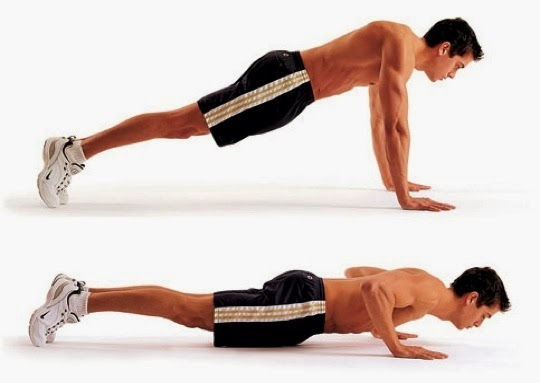Enquanto fizer no solo é sempre bom lembrar de travar suas escápulas para isolar bem o músculo do peitoral. Iniciantes podem começar com o joelho no solo, o que facilitará o movimento. Quanto mais fechados seus braços estiverem, maior será o recrutamento do tríceps. Paralelamente o recrutamento peitoral varia de acordo com a abertura dos braços no solo. Tome muito cuidado com o desgaste do ombro, procurando sempre a execução correta.
Flexão inclinada

Seguindo o mesmo propósito da flexão no solo, a flexão inclinada é mais fácil de ser realizada e suas aberturas são as mesmas da anterior. Esse é exercício é de nível iniciante, considerado até mais fácil que a flexão com joelho apoiado.
Flexão declinada

Para aqueles que querem uma carga maior, a flexão declinada recrutará mais do seu peitoral e ombros. Quanto maior for a elevação dos seus pés, maior será a carga envolvida. Lembre-se sempre de manter as mãos na altura dos ombros para evitar lesões.
Flexão diamante
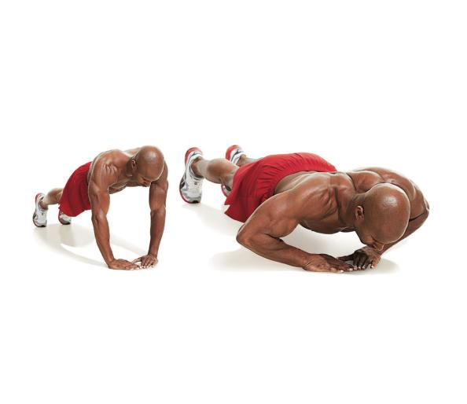A flexão diamante também é de maior carga. O centro do peitoral é mais recrutado nesse exercício, juntamente como tríceps. Forme um "diamante" unindo as mãos no solo e foque em jogar os cotovelos para fora da linha do corpo.
Tríceps banco
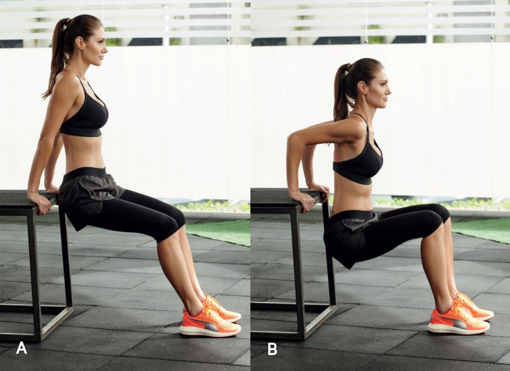Seja num sofá, numa cadeira ou no próprio solo, esse é um excelente exercício para tríceps. O cuidado a ser tomado aqui é de manter a coluna reta à frente do apoio que estiver usando para evitar lesões no ombro. Os pés podem estar esticados ou dobrados como na imagem.
Tríceps na parede
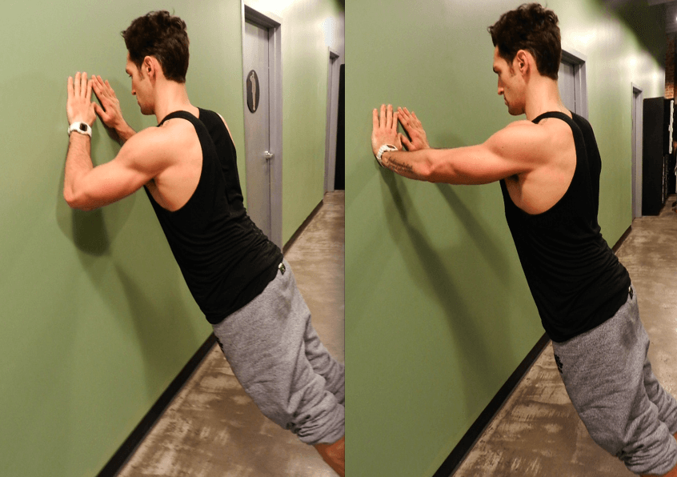No início pode parecer difícil, portanto, quanto menor a inclinação do seu corpo com relação à parede, menor será a carga. O foco é manter a coluna reta e tentar isolar o movimento unicamente ao antebraço, para que não haja recrutamento de músculos que não sejam o tríceps.
Costas
Barra supinada
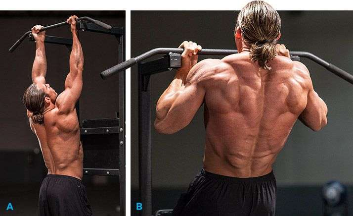A barra supinada trabalha toda a dorsal mas, aqui também há um recrutamento grande dos bíceps. Lembre-se de travar a escápula tanto no início quanto no fim do movimento.
Barra pronada
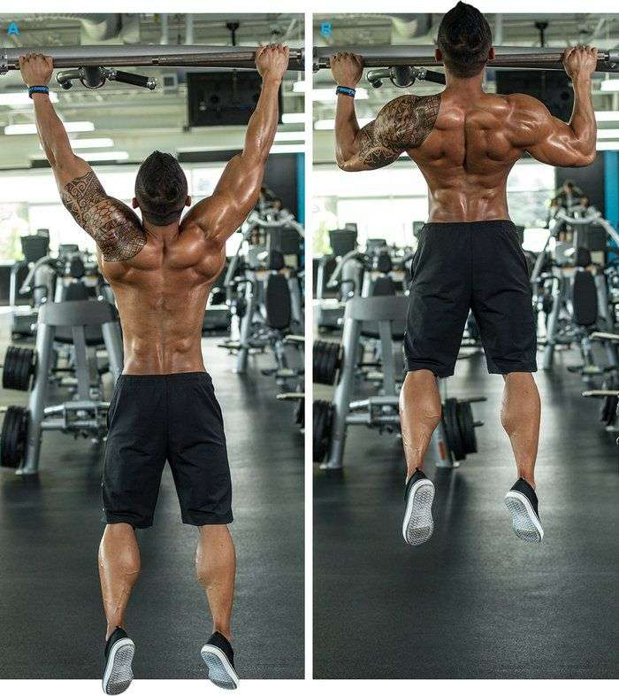A barra pronada, além da dorsal e bíceps braquial, também recruta os músculos do antebraço. As mesmas dicas para barra supinada se aplicam aqui, considerando que pegadas mais abertas dificultam o movimento.
Remada curvada
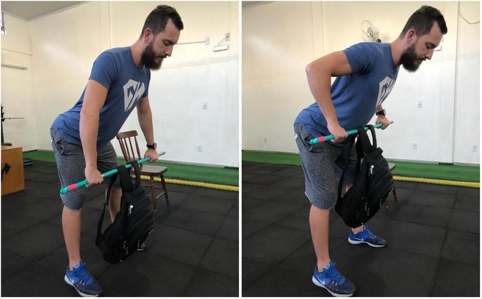Com auxílio de uma mochila (ou halteres caso os tenha), lembre-se de travar a escápula e não tensionar sua coluna(mantenha a postura durante todo o movimento). Levar os cotovelos à retaguarda recrutará também a deltóide posterior.
Remada unilateral
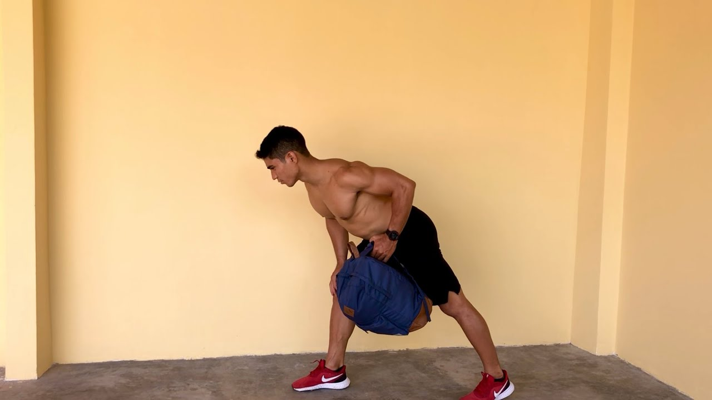Segue o mesmo princípio da remada curvada, porém, com trabalho isolado e unilateral. O outro braço pode ser apoiado na parede ou em qualquer outro apoio para manter o equilíbrio.
Abdômen
Abdominal supra
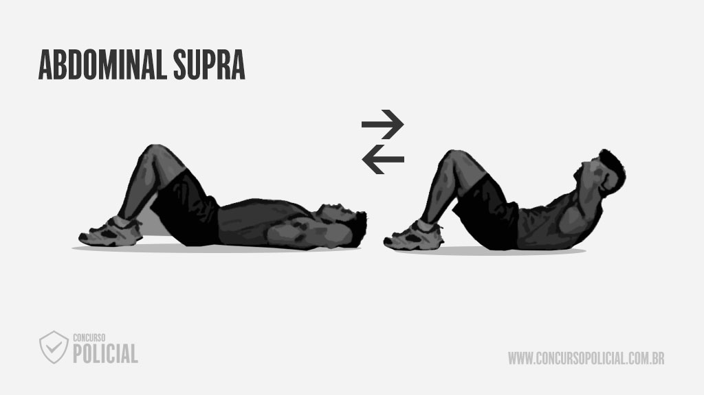Não é necessário subir muito o corpo nesse exercício. Apenas retirar as escápulas do chão e travar o abdômen já garante um trabalho eficiente. Os braços servem como carga também: quanto mais distantes do abdômen, mais força será necessária. Por isso, esticar os braços acima da cabeça é uma boa opção para aqueles que querem se desafiar mais.
Abdominal infra
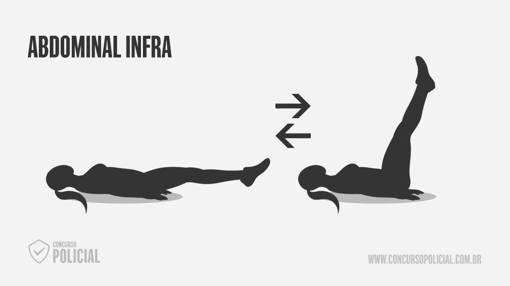Posicionando suas mãos entre a lombar e o glúteo, eleve as pernas até formarem 90 graus com seu corpo. As pernas esticadas são o ideal para maior recrutamento e concentre-se bastante na volta do movimento, faça ela de maneira cadenciada(sem largar as pernas no solo).
Abdominal bicicleta
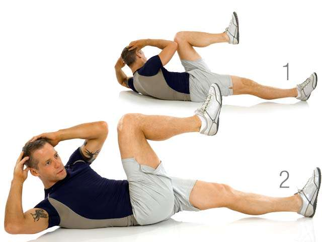A bicileta requer condicionamento também. Focar em encontrar os cotovelos com os joelhos, alternadamente, facilitará a execução. Lembre-se que velocidade não é sinônimo de qualidade, garanta uma execução controlada e veja a lateral do seu abdômen ser fortalecida.
Prancha
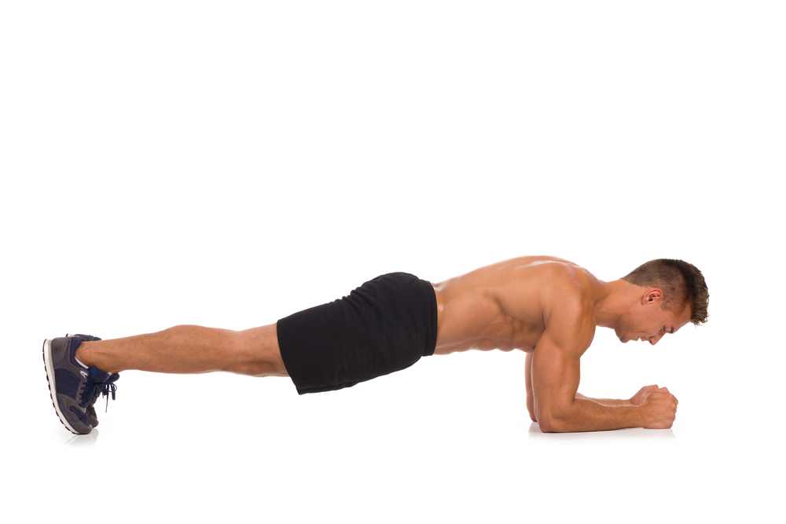O foco na prancha é travar o abdômen, manter a coluna ereta e os braços na linha dos ombros. A base aqui é resitência. Os braços podem ficar na mesma posição que o início de uma flexão por exemplo, caso ache mais fácil.